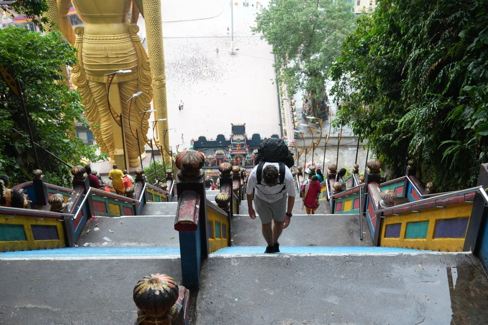
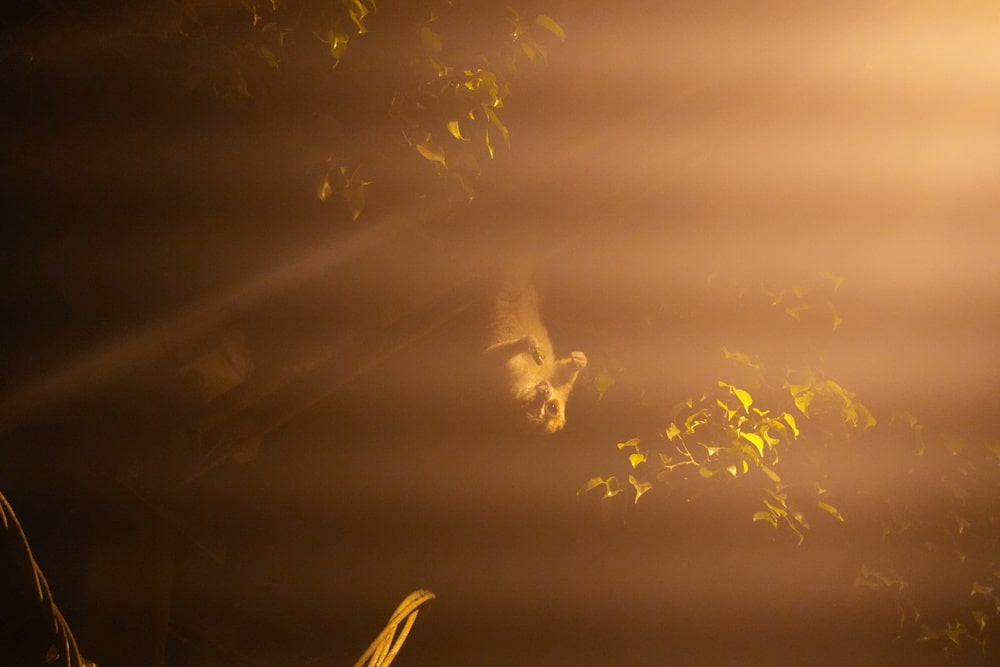

Malaysia
Note: this trip is a continuation of my journey to Western Australia
Introduction
As I already mentioned in the post from Western Australia, our budget for this trip was a bit limited, so from the start we were looking for cheaper options to spend those two weeks. Visitng Australia was a must have, but we didn't have to stay there for the full two weeks. That's when we realized that flights to Kuala Lumpur cost the same as to Singapore, so why not just fly there and return by bus? Especially since Malaysia was second in line among our ideas for this trip. And so, we booked flights to Kuala. There was still one problem - none of us knew much about the country or had many ideas about what to do there. A solid research session was needed. Once we finally sat down to do it, we decided to spend a few days in the city and then head into the oldest rainforest in the world. The rest of the thing, we would figure out on the spot.
Kuala Lumpur
We arrived in Kuala Lumpur from Perth around 5 a.m. and immediately took a taxi to our hotel. Since Malaysia is very affordable, we decided to treat ourselves and booked a rather luxurious place to stay. We got there around 6 a.m. intending to leave our bags, but it turned out that our supposed 5-star hotel wasn't really a hotel at all - it was actually an apartment in a skyscraper. Still, it was pretty fancy, with a rooftop pool, a gym, and other nice amenities. Because of that, though, there was no reception or luggage storage available, so we had to leave the building with our heavy backpacks. We grabbed another taxi and headed straight to Batu Caves. It was around 7 a.m., so we still had a chance to be there before the crowds.
Our apartment complex
We got to the caves fairly quickly and, luckily, there wasn't a single person around - not even any monkeys. We climbed the steep staircase with our heavy backpacks on our shoulders and entered the caves. It was truly an incredible natural wonder - hard to believe that something like this formed on its own. It's a bit of a shame that instead of leaving it in its untamed, natural state, people started building temples inside. But, all things considered, the temples aren't too intrusive. We sat inside for a while, admiring the beauty of the cave's interior, then made our way back down. Even though we had spent no more than 40 minutes there, the area was already swarming with tourists by the time we got out. It was around 9 a.m., and the heat and humidity had become overwhelming, so we quickly escaped to a nearby restaurant for lunch. We had some local dishes and were especially impressed by the freshly squeezed juices made from all sorts of tropical fruits. After the meal, we sat down near the caves and eventually split up to explore the nearby temples. Staszek and I got the traditional forehead mark known as Tilaka. Eventually, feeling worn out, we agreed that it was time to head back, so we took a taxi to our apartment.

 1) Stairs to Batu Caves 2) Grzesiu climbing the stairs 3) Inside the caves 4) Me and Kozak with Tilaka's
1) Stairs to Batu Caves 2) Grzesiu climbing the stairs 3) Inside the caves 4) Me and Kozak with Tilaka's
After visiting the caves, we finally managed to get into our apartment, although it wasn't easy - our host spoke very little English. We went for a short walk to a nearby shop, then to the Petronas Towers and the park below them, but we quickly returned to our place completely exhausted. The humidity and heat made staying outside very difficult, especially since we hadn't slept the night before. We took a 2-hour break to rest, and during that time, we made some plans for the rest of our stay. For sunset, we headed up to the rooftop pool of our building - probably the most luxurious experience of my life, and all of that for just $15 per person per night. Once the sun had set and it started getting chilly, we went back inside. But the day wasn't over yet: shortly after, we headed out to Jalan Alor, a street famous throughout Malaysia for its street food. We went there in the evening not only to try some interesting dishes, but also to meet up with my parkour friend from Kraków - it just so happened that we were both in Kuala Lumpur at the same time. We sat for 2 or 3 hours, chatted about Malaysia's attractions, traveling, training, and more, and of course we had some amazing food (I highly recommend checking out that street!). Finally, absolutely worn out, we returned to the apartment to finally get some sleep.
1) Petronas Towers 2) Our pool on the root 4) Me with Soczek, my parkour friend from Krakow
We decided to spend the next day in the capital as well, but we wanted to take it much slower. Our main goal was simply to rest. We went for a fairly long walk around the city, visiting Independence Square, the Botanical Gardens, and the National Mosque of Malaysia. We also stopped by Merdeka 118, the second tallest building in the world. On our way back, we checked out a Chinese temple and, by chance, stumbled upon a Chinese market in Chinatown, where we bought a lot of souvenirs. In the evening, we relaxed in the rooftop jacuzzi, sipping on beers - living the high life.
 2) Merdeka 118 3) National Mosque of Malaysia 4) Chinese temple
2) Merdeka 118 3) National Mosque of Malaysia 4) Chinese temple
Taman Negara
The next day, we had to get up early because, according to our plan, we were leaving the capital. We headed to the arranged meeting point where a booked minibus was waiting to pick us up. Our goal was to reach Taman Negara National Park, the oldest rainforest in the world. But first, we had to get out of Kuala Lumpur, which wasn't easy due to big traffic jams on the highway. On top of that, one of the other tourists scheduled to join the ride was 30 minutes late, so we had to turn back and pick him up. After about three hours of driving, we finally reached the town of Jerantut, where we switched to a smaller van. That van took us to a river pier, where the third and final part of our journey began: a three-hour boat ride upstream. We traveled on long, narrow wooden motorboats, which were far more comfortable than the buses - we even managed to nap in them. The river, coffee-with-milk in color, wound through the semi-wild parts of the jungle. Along the way, we saw a couple of water buffalo and other smaller animals. Eventually, we arrived at the village near Taman Negara.
Swimming to Kuala Tahan
While the park's visitor center is on one side of the river, the village where most tourists stay is actually on the other side. We first visited the center to pay for our permits and took a short walk to get familiar with the area. Then, pretty exhausted, we grabbed some food and headed to our accommodation, where we rested and mapped out the rest of our stay. We stayed like that until evening, because our first guided jungle walk was scheduled for 8 p.m. - a short night trek to observe night animals. On the way to the meeting point, Kozak nearly stepped on a huge scorpion (which, as we later learned, can be deadly). We met our guide and entered the jungle. The forest made a huge impression on me. I expected a typical tourist attraction - safe and tame - but I couldn't have been more wrong. Venomous scorpions, spiders, and snakes were everywhere. The elephant observation point was only 200 meters from the park office. Our guide told us a story about one of his friends who once had to kill a panther with his bare hands to protect his group. He also shared tales of tiger sightings. This was the real deal - a raw, authentic jungle. Thankfully, we didn't encounter any large predators that night. Instead, we saw a bunch of scorpions, geckos, lizards, chameleons, and giant ants. We also heard a symphony of incredible sounds coming from deep within the jungle. Honestly, I was stunned. After two hours of walking, we finally returned to the village for some well-deserved rest. But first... a shower. The humidity in the jungle is indescribable. You sweat so much that it no longer matters if it's raining or not. Getting in the water doesn't change anything - you're already soaked. You can only imagine what we smelled like after that hike…
 1) Kuala Tahan
In the morning, we got up and went for a proper breakfast at a nearby restaurant - which wasn't easy, since Malaysia is mostly a Muslim country and we happened to be there during Ramadan. After breakfast, we headed straight to the meeting point for our full-day guided jungle trek. We learned instructions on how to stay safe on the trail and were given a food supply for the entire day. Once we crossed the river, we immediately entered the trail. The first part was a three-hour nonstop hike. Sweat was pouring off us like a faucet, but surprisingly, we didn't feel that hot. Every now and then, our guide would point out fascinating facts about the beautiful forest around us. He gave us some so-called “jungle cucumbers” to eat, and also a strange little mushroom that was really hard to chew. We even tried live giant ants - oddly enough, they tasted super fresh, almost like lemon. You had to grab them by the head and bite off the torso. We also saw poisonous trees, caterpillars that can send you to the hospital with a single touch, sandalwood trees used in perfumes, and a whole array of other interesting plants and animals. Eventually, we took a well-earned break for lunch. We ate delicious chicken with rice, carefully prepared by a Malaysian grandma. After lunch, we climbed a small hill and then headed straight to our main destination - a waterfall. It wasn't huge, but the chance to bathe in the cool water after all that sweat was exactly what we had been dreaming of. We were thrilled. Tiny fish swam under the waterfall and, for some reason, kept nibbling at our legs - but we honestly didn't care at all. We stayed there for a good hour before the guide called us back. We descended from the waterfall to the river, where boats were waiting for us. We had a short but fun ride through rapids that left everyone soaked. After about 15 minutes, we reached a village of an indigenous tribe that lives in the jungle. They told us about their beliefs, traditions, and way of life. We got to see how they use blowpipes (and try it ourselves), and they also showed us how to make fire - I volunteered, and I MADE IT! We learned some really interesting things: the tribe believes in a jungle spirit, 10 out of their 12 villages still live nomadically, and they typically marry around the age of 14. It was amazing to witness all this up close. At the end, we had a bit of time to walk around the area. I even managed to buy a miniature blowpipe from the village shaman as a souvenir! Finally, after a full day of activities, we returned to our village. We just managed to catch the only shop that sold beer before it closed. We bought 10 small beers and spent a lovely evening relaxing on deck chairs, listening to the sounds of the jungle across the river.
Jungle hike with a guide
The next day was our last one in the national park, and this time, we hadn't booked any guided tours - we wanted to head into the jungle on our own, and reach some interesting spot. Kozaczek and I decided to take on this expedition ourselves, while Grzesiu decided to rest. After breakfast, we quickly crossed the river and began walking along the legal section of the trail (the part you're allowed to hike without a guide) toward a small shelter located deeper in the jungle. These self-guided trails are usually elevated boardwalks made of wooden planks, whereas the routes that require a guide are just narrow dirt paths. After about half an hour, we reached one of those unofficial trails and started moving quickly toward our goal, hoping we wouldn't run into anyone or get spotted. Along the way, we had to cross a few small bridges. Tiny leeches kept sticking onto our legs, so we had to make stops now and then to remove them. The trail to the shelter took us about an hour and went relatively smoothly. It turned out that the place we were heading to was somewhat abandoned. A small elevated hut was quite dirty, long reclaimed by nature - every corner was covered in spider webs with large spiders, and here and there were abandoned wasp nests. The pipe supplying water to the toilet was leaking in at least five places. Inside, however, the bed frames were still standing, and the place was still suitable for overnight stay. From inside, there was also a beautiful view of the forest. We rested quietly for a good 30 minutes, hoping some animal might show up, but we didn't see anything, so we set off on the way back. On the way, we came across elephant tracks - you could clearly see where they had walked. We hadn't gone far when, because as it is typical in a rainforest, it started raining. It poured like buckets, and we were afraid a branch might fall on our heads. We quickened our pace to get back to at least the legal part of the trail as soon as possible. Once we got there, we relaxed. On the way back, we stumbled upon a beach by the river and decided that since we were already completely soaked, we might as well take a swim. I wasn't worried about predators in the river since the beach was marked as safe for swimming. It was truly an incredible experience to swim alone in a river in the middle of the jungle while it was raining. Later, on the way, we also saw a trail leading to a small hill called Bukit Terisek. We climbed it and were rewarded with beautiful views of the entire jungle and the highest peak of mainland Malaysia, Mount Tahan. After that, we finally returned to civilization, crossed the river by boat, and met up with Grzesiu. We were so sweaty, dirty, and smelly that we were a bit embarrassed to go to a restaurant, but we were too hungry to wait. We ate a big meal and went back to our room to wash up. We ended the day chilling with a beer on lounge chairs.
1) Chilling in the river 3) View from Bukit Terisek
Going home
In the morning, our slow journey back home began. First, we took a long bus ride to Jerantut, from where we transferred to a bigger bus heading to Kuala Lumpur. Once back in the capital, we didn't have many plans: we left our backpacks in a luggage storage and went to Chinatown to buy souvenirs at the market and have lunch. We also took a long walk around the city. In the evening, we rested and went for our night bus to Singapore. We crossed the border during the night and were already in the city by 6 a.m.
We went straight to the airport, dropped off our bags, and took a short nap on the floor for a few hours. When we had pulled ourselves together, we went to see the airport and the famous waterfall - it was truly amazing. Next we took a bus to a seaside park where we spent the whole day. We had lunch and swam in the sea. Overall, it was a pretty chill day as we were quite tired after the whole trip. In the evening, we returned to the airport and boarded the plane back to Poland. That was the end of our wonderful trip.
1,2) Changi airport 3,4) Park in Singapore
Summary
Malaysia surprised me a lot. Before the trip, I didn't have any particular expectations and I didn't care much about what we would do there, but it turned out that the country has so much to offer. The capital, Kuala Lumpur, is a very interesting city full of attractions and it's not as exhausting as big cities usually are. The Taman Negara National Park is truly an amazing experience and a must-visit for everyone. While there, we also learned about other worthwhile places to see, although we didn't have time to visit them. In Taman Negara you can really experience the true jungle in a quite accessible and easy way. The people there are very kind, accommodation and food are very cheap, and the nature and culture are beautiful. I'm extremely happy that I had the chance to visit this country and I hope to return someday - maybe to Borneo.
Peace, Jakub